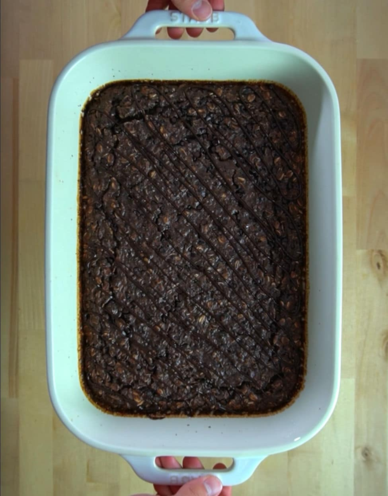

Double Chocolate Brownie Baked Oatmeal

A great food for either a meal-prepped, quick and easy breakfast, or a nice and sweet bedtime snack. This recipie makes five servings and takes around 55 minutes to make.
Ingredients
- 3 cups (240 g) old fashioned oats
- 3 scoops (90 g) vanilla protein powder
- 1 tsp (4 g) baking powder
- 1/4 cup (20 g) cocoa powder
- 2 tbsp (42 g) maple syrup
- 1 tbsp (14 g) butter
- 10 tbsp (150 g) liquid egg whites or two whole eggs
- 2 cups (480 g) milk
- 1 cup (226 g) unsweetened apple sauce
- 4 tbsp (56 g) mini chocolate chips
- 1 tsp (5 g) milk
Instructions
For the Baked Oatmeal
- Preheat your oven to 350°F (177°C).
- In a large bowl, mix together the oats, protein powder, cocoa powder, and baking powder.
- Add in the egg whites, milk, syrup, 1 tbsp of melted butter, apple sauce, and 2 tbsp of chocolate chips.
- Spray a 13″x9″ pan with oil and add the oat mixture.
- Top with 1 tbsp of chocolate chips.
- Bake for 35-40 minutes.
- Melt the last tbsp of chocolate chips in the microwave with 1 tsp of milk.
- Place the melted chocolate into a piping bag and drizzle over the top.
Plating
- This recipe makes 6 servings. Cut the oatmeal into 6 equal pieces.
Nutrition
Calories: 542kcal | Carbohydrates: 38g | Protein: 44g | Fat: 24g